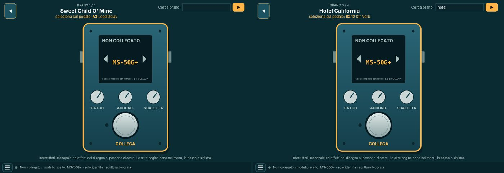
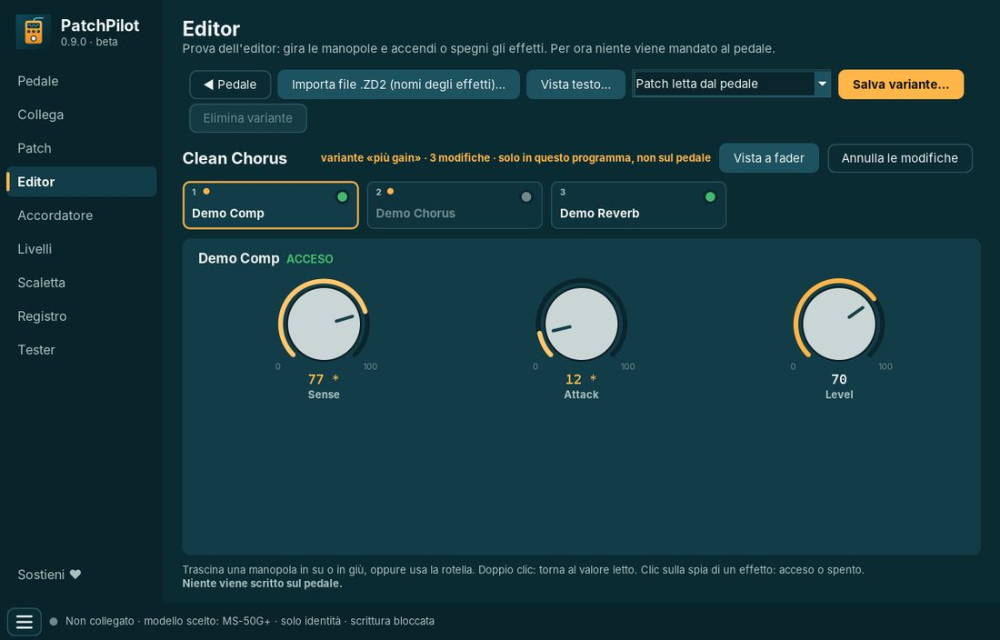

🧪 È una beta. È fatta con cura, e la lettura dei MultiStomp+ coincide con altri progetti provati su pedali veri, ma PatchPilot non è ancora stata provata su tutti i pedali. Provato su un pedale vero: ancora nessun modello. Ne hai uno? Provala e mandaci il registro.
✨ Novità della 0.9: tutte le patch allo stesso volume, brani divisi in sezioni che seguono il tempo e passaggi graduali da un suono all'altro, la libreria di patch della comunità , sei pedali in più e la versione per Mac.
Pedali supportati
MS-50G+MS-60B+MS-70CDR+MS-80IR+MS-200D+MS-90LP+G1 FOURG1X FOURB1 FOURB1X FOURG2 FOURG2X FOURB2 FOURG6G11B6
| Pedale | Collegamento | In questa beta |
|---|---|---|
| MS-50G+ · MS-60B+ · MS-70CDR+ · MS-80IR+ · MS-200D+ | USB | 🧪 riconoscimento, elenco patch, editor, accordatore |
| G2 FOUR / G2X FOUR · B2 FOUR | USB | 🧪 riconoscimento, elenco patch, editor, accordatore |
| MS-90LP+ (novità 0.9) | USB | 🧪 riconoscimento, elenco patch, editor, accordatore |
| G1 FOUR · G1X FOUR · B1 FOUR · B1X FOUR (novità 0.9) | USB | 🧪 modello scelto da te; elenco patch ed editor sul computer |
| G6 · G11 · B6 | USB | 🧪 modello scelto da te; lettura patch non provata su un pedale vero |
| Qualsiasi pedale MIDI, di qualsiasi marca (novità 0.9) | USB-MIDI | sul computer: manda il cambio patch per ogni brano della scaletta, più quattro fader MIDI |
🙋 Il tuo pedale non è in elenco? Diventa tester. Vuoi che PatchPilot supporti il tuo modello, anche di un'altra marca? Il programma per computer (Windows, Mac, Linux) ha la pagina Tester: una registrazione guidata che ascolta soltanto. Al pedale manda solo la richiesta di identità MIDI standard, poi registra quello che il pedale invia mentre cambi patch o giri una manopola; alla fine mandi un file di testo a autofonic.mixer@gmail.com con marca e modello.
Tutte le funzioni
Tutto quello che PatchPilot fa oggi, nella versione che scarichi. Sul pedale non viene mai scritto niente.
Guarda dentro il pedale
Riconosce il pedale da solo. Colleghi il cavo USB e PatchPilot ti dice che modello è e che versione ha. Per i modelli che non si presentano da soli lo scegli tu da un elenco.
Elenco di tutte le patch. Tutte le patch del pedale con il loro nome, in un colpo d'occhio, e quella selezionata in evidenza.
Editor di effetti e parametri. Ogni slot con il suo effetto, acceso o spento, e tutti i parametri. Vista a manopole o a fader: puoi girarle per provare, ma resta tutto nel programma.
Nomi veri di effetti e parametri. Importa i tuoi file .ZD2 e al posto dei numeri vedi i nomi degli effetti e delle manopole.
Accordatore a lancetta. L'accordatore del pedale, grande sullo schermo, con la nota e i cent: lo leggi anche da lontano.
Schermata a forma di pedale. La pagina principale disegna il tuo modello: display, manopole e interruttori si possono cliccare.
Metti al sicuro i tuoi suoni
Backup di tutte le patch. Salva in un file tutte le patch del pedale e riaprile quando vuoi, anche senza il pedale collegato.
Schede suono. Per ogni patch una scheda leggibile — effetti, acceso/spento, parametri — da stampare, salvare o condividere.
Ricerca per effetto. «Dove ho usato quel delay?» Trovi subito tutte le patch che usano un effetto.
Confronto tra due patch. Metti due patch una accanto all'altra e vedi solo le differenze.
Sul palco
Scaletta. Metti in ordine i brani e scegli la patch per ognuno, una per pedale se ne usi più di uno. Con capotasto e note.
Barra dei brani. Cambi brano con la rotella del mouse, le frecce, la barra spaziatrice o un pedale USB volta-pagina, e cerchi un brano per nome.
Modalità palco. Schermo scuro a caratteri grandi: quale patch selezionare adesso e cosa viene dopo.
Brani che seguono il tempo. Dividi il brano in sezioni con le loro battute: conteggio iniziale, battiti sullo schermo e l'avviso «PREPARA» prima di ogni cambio. Mostra anche i tempi del delay.
Passaggi graduali. Il suono cambia piano piano, come con un pedale d'espressione virtuale, nei secondi o nelle battute che scegli.
Volume e livelli
Tutte le patch allo stesso volume. Suoni lo stesso giro con ogni patch: PatchPilot misura il volume come lo sente l'orecchio (LUFS) e ti dice che volume patch impostare.
Misuratore del livello audio. Se il pedale fa anche da scheda audio, vedi il livello del segnale. Il suono viene solo misurato, mai registrato.
Fader MIDI. Quattro cursori che mandano Control Change standard (volume, espressione…) a un pedale MIDI generico.
Altri pedali e comunità
Qualsiasi pedale MIDI. Con un pedale di un'altra marca il computer manda da solo il cambio patch per ogni brano della scaletta.
Libreria di patch della comunità. Patch condivise da chi usa PatchPilot, libere per tutti (CC0), da cercare per brano, artista, genere e pedale.
Pagina Tester. Il tuo pedale non è in elenco? Una registrazione guidata che ascolta soltanto ci aiuta ad aggiungerlo.
Registro. Tutto quello che il programma e il pedale si dicono, da salvare e mandare se qualcosa non va.
Com'è fatto
Schermate vere del programma per computer.






Metti al sicuro i tuoi suoni. Salva su file tutte le patch del pedale. Per ogni patch hai una scheda suono leggibile — effetti, acceso/spento, parametri — da stampare, salvare o condividere.
Cerca e confronta. «Dove ho usato quel delay?» Cerca le patch per effetto e confrontane due per vedere solo le differenze.
Scaletta e modalità palco. Metti in ordine i brani e scegli la patch per ognuno — una patch per pedale se ne usi più di uno. Sul palco, uno schermo scuro a caratteri grandi ti dice quale patch selezionare e cosa viene dopo.
📱 App Android in arrivo su Google Play
Lo stesso PatchPilot su telefono e tablet Android, con un cavo USB-C (o un adattatore OTG): niente computer in sala prove o sul palco. L'app è pronta e in prova; uscirà solo su Google Play.
Collega e guarda. Riconoscimento del pedale, elenco patch, editor di effetti e parametri, accordatore.
Il tuo pedale sullo schermo. Il disegno del tuo modello, con display, manopole e tasti da toccare.
Brani con un dito. Barra dei brani con le frecce, la ricerca per nome e lo scorrimento col dito per passare al brano dopo.
Scaletta e modalità palco. Sezioni a tempo, avviso «PREPARA» e pedali Bluetooth volta-pagina.
Backup e schede suono. Salva le patch sul telefono e condividi la scheda di un suono.
Versione completa. Si compra dentro l'app con Google Play: 4,99 €, una volta sola.

✨ Novità della 0.9
Funzioni che negli altri editor per pedali non trovi, una libreria condivisa da tutti e la versione per Mac. Sono già nel download; come il resto della beta, aspettano ancora le prove sui pedali veri.
🔊 Tutte le patch allo stesso volume. Basta salti quando cambi patch dal vivo. Suoni lo stesso giro con ogni patch per 6 secondi: PatchPilot misura quanto è forte come la sente l'orecchio (LUFS, senza contare le pause) e ti dice il volume patch che le rende tutte uguali. Poi rimisuri e controlli.
Windows, macOS e Linux, con l'uscita del pedale nel computer (pedale che fa da scheda audio USB, oppure una scheda audio). Il suono viene solo misurato, mai registrato; sul pedale non si scrive niente.
🥁 Brani che seguono il tempo. Dai a ogni brano il suo tempo e dividilo in sezioni — intro, strofa, ritornello, assolo — ognuna con le sue battute e la sua patch. Sul palco premi T: una battuta di conteggio, i battiti sullo schermo, la sezione dopo da sola e nell'ultima battuta «PREPARA: 1-03 Crunch» prima di ogni cambio. Funziona con i pedali Bluetooth volta pagina e mostra i tempi del delay per il tempo del brano.
Android, Windows, macOS e Linux. Con un pedale MIDI generico il computer manda da solo la patch di ogni sezione.
🌊 Passaggi graduali. Invece di saltare da un suono all'altro, il suono cambia piano piano, come con un pedale d'espressione virtuale: nei secondi che scegli, oppure in qualche battuta per ogni sezione della scaletta. Sui pedali Zoom vedi in anteprima i valori a metà strada tra due patch.
Windows, macOS e Linux, verso un pedale MIDI generico (CC di espressione). Sui pedali Zoom l'invio arriverà dopo le prove sui pedali reali.
📚 Libreria di patch della comunità. Un repository pubblico di patch fatte da chi usa PatchPilot, libere per tutti (CC0), da cercare per brano, artista, genere e pedale. Un clic in PatchPilot condivide la tua patch; un controllo automatico la verifica e, appena approvata, compare nella libreria.
Si condivide solo la patch, mai i file degli effetti Zoom.
🎚️ Una schermata a forma di pedale. La schermata principale disegna il tuo modello, con la barra dei brani: rotella del mouse, frecce o un pedale USB volta-pagina cambiano brano, e puoi cercare un brano per nome. In più accordatore a lancetta, vista a fader nell'editor, fader MIDI e misuratore del livello audio.
🍎 PatchPilot per Mac. Lo stesso programma come .dmg per i Mac Apple Silicon (M1–M4) e Intel, con Java incluso. Al primo avvio: Impostazioni di Sistema → Privacy e sicurezza → Apri comunque.
Non ancora provato su un Mac vero: cerchiamo tester con il Mac.
🤖 In arrivo con la 0.9.1: assistente AI, maestro e varianti
Già pronte e in prova: arrivano con il prossimo aggiornamento, su Windows, macOS e Linux. Non sono ancora nel download di oggi.
🤖 Descrivi il suono. Scrivi quello che vuoi sentire — «più caldo e con meno riverbero» — e l'assistente AI ti propone quali manopole toccare e perché, usando gli effetti che hai già nella patch.
La proposta resta nell'editor: sul pedale non viene scritto niente. Serve internet; al servizio vanno solo la descrizione e i valori della patch, mai l'audio.
🎓 Il maestro. Un clic su «Spiegami questa patch» e PatchPilot ti dice, in parole semplici, a cosa serve ogni effetto e ogni manopola, come lavorano insieme e un piccolo esperimento da provare.
Pensato per chi comincia e per chi ha scaricato una patch e vuole capirla.
💾 Salva variante. Tieni più versioni della stessa patch — «strofa pulita», «assolo con più gain» — e richiamale dall'editor.
Le varianti sono file sul tuo computer: la memoria del pedale non viene toccata.
🎛️ Anche altre marche. Oltre ai 16 Zoom, profili pronti per Line 6 HX Stomp e Valeton GP-200: cambio patch dalla scaletta e comandi MIDI con i loro nomi.
Via MIDI standard. Non ancora provati sui pedali veri: cerchiamo tester.
⏳ 7 giorni con tutto acceso. Dalla 0.9.1 PatchPilot funziona per intero per 7 giorni, assistente AI compreso (5 richieste di prova). Poi riconoscimento del pedale, lettura delle patch, accordatore e scaletta di 3 brani restano gratis per sempre.
Il resto, con 100 richieste al mese all'assistente AI, è nella versione completa: 4,99 €, una volta sola.
Il tuo pedale è al sicuro
PatchPilot legge soltanto. Non scrive, non salva e non cancella nulla nella memoria del pedale: quei comandi sono bloccati nel codice. Backup, schede suono e scalette sono file sul tuo telefono o computer. Il cambio patch dall'app e la modifica dei parametri arriveranno solo dopo le prove sui pedali reali.
Gratis e versione completa
Oggi, con la 0.9, è tutto gratuito. Dalla 0.9.1 funziona così: 7 giorni con tutto acceso, poi resta gratis per sempre quello che serve per vedere se il tuo pedale funziona.
| Funzione | Gratis per sempre | Versione completa |
|---|---|---|
| Riconoscimento del pedale, elenco patch, editor | ✅ | ✅ |
| Accordatore, registro, pagina Tester | ✅ | ✅ |
| Scaletta fino a 3 brani | ✅ | ✅ |
| Libreria di patch della comunità | ✅ | ✅ |
| Scaletta senza limiti e modalità palco | — | ✅ |
| Backup su file e schede suono | — | ✅ |
| Ricerca per effetto e confronto | — | ✅ |
| Varianti salvate (0.9.1) | — | ✅ |
| Assistente AI e maestro (0.9.1) | 7 giorni di prova | 100 richieste al mese |
Versione completa: 4,99 €, una volta sola
Oggi tutte le funzioni sono gratuite, perché PatchPilot è in beta. Più avanti l'esportazione dei backup su file, le schede suono, la ricerca, il confronto, la scaletta oltre i 3 brani e la modalità palco faranno parte della versione completa: 4,99 €, una volta sola, valida per sempre su quel telefono o computer. Riconoscimento del pedale, elenco patch, editor, accordatore e scaletta di 3 brani restano gratuiti. Se la compri adesso sostieni il progetto e hai già il tuo codice quando la versione completa verrà attivata.
- Apri PatchPilot sul computer e vai alla pagina Sostieni ♥. Il codice dispositivo ha la forma
PP-ABCD-EFGH. - Carta, Google Pay o Apple Pay: paga 4,99 € con Stripe, scrivi il codice dispositivo quando viene chiesto e il codice di sblocco appare subito dopo il pagamento.
- PayPal: paga 4,99 €, poi invia l'email a autofonic.mixer@gmail.com: ricevi il codice di sblocco per email, di solito entro un giorno.
Domande frequenti
Esiste un'app Android per Zoom MS-50G+, MS-60B+ o MS-70CDR+?
Le app Handy Guitar Lab di Zoom per i MultiStomp+ sono per iPhone. PatchPilot è un programma per Windows, macOS e Linux, con l'app Android in arrivo su Google Play, che legge patch, effetti e parametri di questi pedali via USB. È una beta.
PatchPilot può modificare o salvare le patch?
Non ancora. La beta legge soltanto dal pedale. La modifica dei parametri e il cambio patch arriveranno un passo alla volta, dopo le prove sui pedali reali.
Che cavo serve?
Un cavo USB-C ↔ USB-C, oppure un adattatore OTG con il cavo USB del pedale. I MultiStomp+ di solito hanno bisogno anche dell'alimentatore, perché il telefono può non bastare.
Funziona sul computer?
Sì: Windows 10/11, macOS (Apple Silicon e Intel) e Linux, con le stesse funzioni. Java è incluso nel download. Chiudi prima Guitar Lab: la porta MIDI del pedale funziona con un programma alla volta.
Quanto costa?
Gratis durante la beta. La versione completa costa 4,99 €, una volta sola per dispositivo, con carta (Stripe) o PayPal; ricevi un codice di sblocco personale.
PatchPilot può mettere tutte le patch allo stesso volume?
Sì, dalla versione 0.9, su Windows, macOS e Linux: suoni lo stesso giro con ogni patch, PatchPilot misura il volume percepito (LUFS) e ti dice il volume patch che le rende uguali. Il suono viene solo misurato, mai registrato.
Esiste una libreria di patch Zoom gratuite?
Sì: la libreria della comunità di PatchPilot, un repository pubblico di patch condivise con licenza CC0, da cercare per brano, artista, genere e pedale.
PatchPilot è fatta da Zoom?
No. PatchPilot è un progetto indipendente, non affiliato a Zoom Corporation.
PatchPilot è un'alternativa a Guitar Lab?
Per guardare dentro il pedale, fare backup, preparare la scaletta e suonare dal vivo, sì, e funziona anche su Linux. Non scrive ancora le patch sul pedale: per quello serve ancora il programma di Zoom.
PatchPilot usa l'intelligenza artificiale?
Dalla versione 0.9.1: «Descrivi il suono» propone quali manopole toccare e «Spiegami questa patch» spiega ogni effetto. Le proposte restano nel programma; al servizio vanno solo la descrizione e i valori della patch, mai l'audio.
Funziona con pedali di altre marche?
Sì, via MIDI standard: con un pedale MIDI qualsiasi il computer manda il cambio patch per ogni brano. Dalla 0.9.1 ci sono profili pronti per Line 6 HX Stomp e Valeton GP-200.